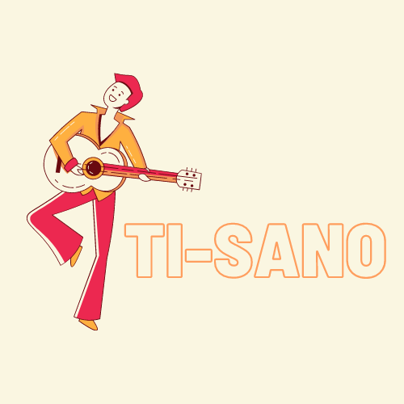

Eventi in programma

20 giugno 2023
Capitan Luigino è un artista emergente di 70 anni che ha scoperto la sua vocazione per il jazz solo recentemente. Nonostante la sua età, ha dimostrato di avere una grande energia, una voce potente e una sensibilità musicale fuori dal comune. Il suo stile è originale e innovativo, capace di fondere elementi di jazz tradizionale con influenze di altri generi musicali. Capitan Luigino si esibirà in un concerto sorprendente, dove presenterà i brani del suo primo album “Il mio jazz”, frutto di un lungo lavoro di ricerca e sperimentazione. Un’occasione unica per scoprire un nuovo talento del jazz italiano, e per lasciarsi conquistare dalla sua musica fresca e coinvolgente. Non perdetevelo!

25 giugno 2023
Ti-sano è un artista emergente della scena indie italiana, che con le sue canzoni racconta storie di vita quotidiana, sentimenti e sogni. Il suo stile musicale è un mix di pop, rock e folk, con influenze di artisti come Fabrizio De André, Lucio Battisti e Vasco Rossi. Ti-sano si esibirà in un concerto imperdibile, dove presenterà i brani del suo ultimo album “Semplicemente io”. Un’occasione unica per ascoltare la sua voce calda e coinvolgente, e per lasciarsi trasportare dalle sue melodie e dalle sue parole. Non perdetevelo!

1 luglio 2023
Gluten Free è una nuova band che si propone di portare una ventata di freschezza e divertimento nel panorama musicale italiano. La band è composta da quattro giovani musicisti che hanno in comune la passione per la musica e il senso dell’umorismo. Il loro genere musicale è un mix di pop, rock e rap, con testi ironici e dissacranti che parlano di temi attuali, di vita quotidiana. Gluten Free si esibirà in un concerto esilarante, dove presenterà i brani del suo primo album “Senza Glutine”, oltre a qualche cover rivisitata in chiave comica. Un’occasione unica per divertirsi e ballare con la musica di questa band originale e simpatica. Non mancate!